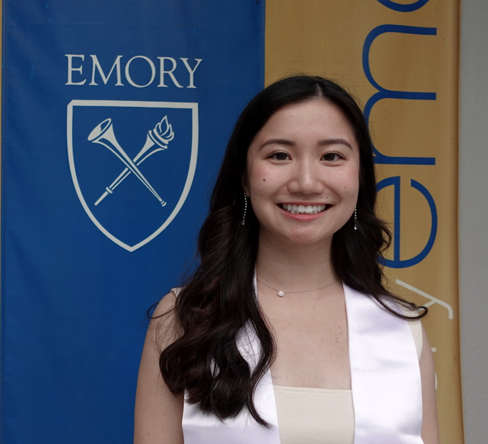

 Welcome to my website! I am a M.Sc. student in Linguistics at the University of Edinburgh. I am broadly interested in natural language meaning and understanding. I enjoy exploring questions like: How do we convey meaning using language? How do we derive meaning from the language use of others? How can we model and replicate this interaction? Previously, I completed my B.A. in Mathematics and Linguistics at Emory University. Outside of research, I am interested in running, reading fiction, and feminist theory.
Contact me by reordering the following strings:
"s2327232", "ed.ac.uk", "@"